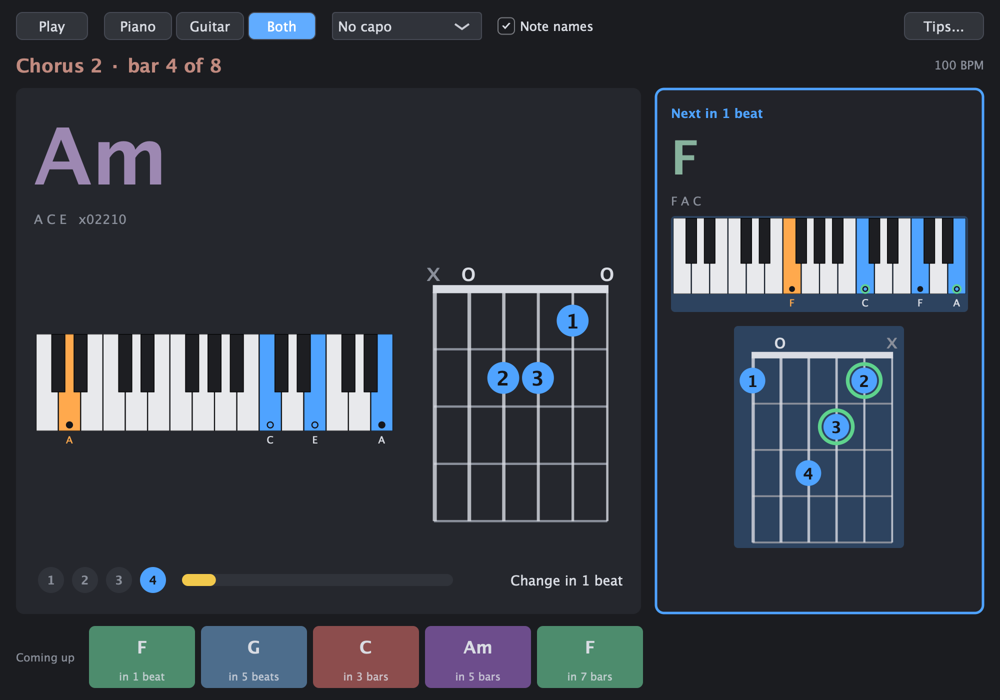
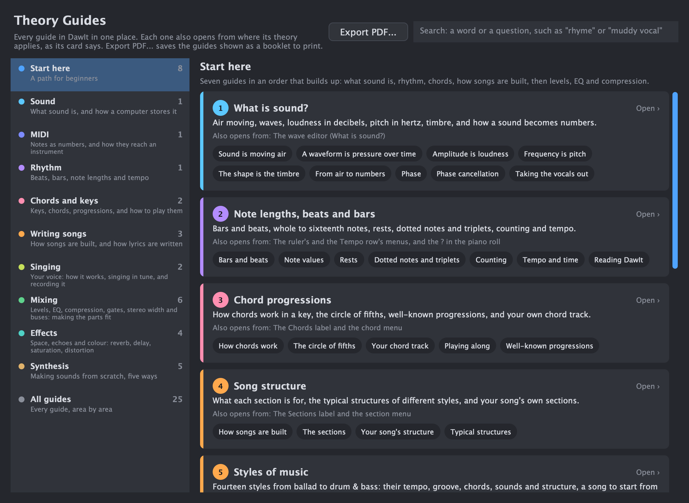

Who it’s for
Different ways in.
The same curiosity.
You might be writing your first song or know your way around a studio. Start with what you want to understand or make.
01 / Your way in
Songwriter and composer
Find chords that fit, shape the parts of the song, and write melodies in a key
Writes songs or pieces and wants chords, structure and melodies that work.
Start here: Choose the key in the toolbar, then click a bar on the Chords row.
- Chords and key. Click a bar and the menu offers the chords that usually follow the previous one, each with its Roman numeral and what it does in the key.
- Circle of fifths. See how the keys and the chords of your key connect, and click a key to hear its chord.
- Song sections. Drag across bars to mark an intro, verse, chorus or bridge. The structure guide shows twelve typical structures and gives advice on yours.
- Piano roll. Draw, move and resize notes with snap, and switch on the scale filter so every note stays in key.
- AI co-writer. Ask for a chord progression, melody, bassline or drums in your key, tempo and chords. It runs through Ollama on your own computer, which you install yourself with a model.
- Chord sheets. Save the chords as pages to print, for piano, guitar or both.
- To your DAW. Drag a clip into Logic, Ableton or any other DAW as MIDI, with the tempo and key.
Also useful: Rhythm guide, Recording from a MIDI keyboard.

02 / Your way in
Singer
Get the words in time, rehearse the take, and hear a sketch of the song
Has a melody and words and wants the lyrics in time, a way to rehearse, and a backing to sing over.
Start here: Double-click the Lyrics row and type the words.
You can record your voice or instrument onto an audio track through your audio interface, or import a recording you already have. MIDI recording keeps your keyboard performance as editable notes.
- Lyrics row. Type the words, then put each syllable in time by dragging it or by tapping along while the song plays.
- Sing along. Before you record, a window shows the line to sing now in large letters, with the colour running over each syllable and a count-in after a rest.
- Singing techniques. A guide to breathing, warming up, registers and singing in tune, where you set your range and DawIt checks your melody against it and suggests a key to try. A start, not a teacher.
- Tune. Check how in tune your voice is, in the key of your song, and move each note closer if you want.
- Karaoke version. Right-click a recording and take the singer out to practise over the band. The original vocal can stay quietly as a guide.
- Play along. The chord playing now, large, with the next chord beside it, if you accompany yourself on piano or guitar.
- Sing this. A computer voice sings your melody and lyrics, so you hear a sketch before you have a singer. English only. DawIt comes with no voice: you add one yourself, and each voice has its own terms from its maker.
- Compressor. Starting points for vocals, with the reason for each setting, if you mix a vocal you bring in.
Also useful: Detect lyrics from a vocal recording (English).

03 / Your way in
Lyricist
Write words that match the melody and the shape of the song
Writes words and wants them to fit the music.
Start here: Open the Lyrics row, then read the lyrics guide.
- Lyrics editor. Write the whole text the way lyrics are written: one sung line per line, an empty line between verses, [Verse] or [Chorus] above a verse and hyphens for syllables.
- Lyrics guide. The guide covers how lyrics are written, with a look at your own song.
- Sections. Mark the parts of the song, and each verse of your text lands on its section.
- Sing this. Hear the words sung. A strip names notes without words and syllables without notes, and can adjust a copy of the notes to match the words. English only, and you add the voice yourself.
- Detect lyrics. Turn a vocal recording into timed lyrics, English only. The models (Small, 488 MB, or Medium, 1.5 GB) download once and run on your computer.
Also useful: Sing along.
![The Lyrics window: two verses and a chorus typed with [Verse] and [Chorus] headings and hyphens between syllables, such as a-long and ri-ver, above a check box to keep the timing of the words that didn't change](assets/screenshots/lyrics-editor.png)
04 / Your way in
Producer and arranger
Sketch the song, take recordings apart, and move the result to your DAW
Builds the parts of a song and wants a quick sketch, a way to study a recording, and a way to take it on.
Start here: Open the example song and fold the song rows to see its shape.
- The screen. The arrangement, the rows for sections, chords and lyrics, and the bottom panel for the piano roll, the wave editor or the mixer.
- Sections and chords. Lay out the song first, then fill it in. The Chords row and the Sections row sit under the ruler.
- Generate parts. Drums, basslines and arpeggios that follow your key, tempo and chords, through Ollama on your own computer.
- Record a MIDI keyboard. Metronome, a one-bar count-in, and loop recording that adds every pass to the same take.
- Stems. Split a recording into drums, bass, vocals and the other instruments, each on its own track.
- Detect tempo. Find a recording's BPM and line its first downbeat up with a bar. Chords and structure can then be detected on its bars.
- Follow the recording. For a band without a click, give every bar its own tempo so the bars stay with the band.
- To your DAW. Drag a clip or a track out as MIDI.
Also useful: Detect chords, Detect structure, Audio to MIDI.

05 / Your way in
Mix engineer
See and hear what the level, the tone and the space of every track are doing
Balances level, tone and space, and wants to know what each control does to the sound.
Start here: Click Mixer in the transport bar (Cmd+2).
- Gain staging. The device bar draws the level at every step of a track's chain, and a ! points at what to check.
- Buses and sends. Group tracks into a bus with its own effects, fader and meter, and send tracks to a shared reverb or delay.
- Signal flow. The whole mix as one live map, with a level on every line, and the path of the selected track lit up.
- EQ. Six bands over the spectrum of your track, starting points per instrument, and Find a bad frequency.
- Compressor. The curve to drag, a view of what it turned down, Hear what it removes and Match level.
- Gate. Close the gaps between notes to remove hiss, hum and bleed.
- Stereo. Make the low end mono below a frequency you choose, with a gradual crossover, and set the width above it.
- Tune. See how many cents sharp or flat a vocal is, and move each note towards the key a little or a lot.
- Reverb and delay. Put a sound in a room, and set echoes that fit the song's tempo.
- Saturation and distortion. Warmth, grit and fuzz, with the reason for each.
- Your own plugins. Load VST3 plugins, and Audio Units on macOS only.
Also useful: The effect chain, What is sound?.

06 / Your way in
Sound designer
Build a sound from waves, harmonics or a model, and see what each control does
Builds sounds from scratch and wants to know what every knob does.
Start here: Pick DawIt Subtractive from + Instrument in the device bar.
- Subtractive synth. Oscillators, a filter with resonance, envelopes and an LFO, with the harmonics drawn before and after the filter.
- Additive synth. Build a note from sines, one harmonic at a time.
- FM synth. Four sines bending each other, the way a Yamaha DX7 does.
- Drum synth. Make every drum from scratch, the way the Roland TR-808 did, with seven kits to start from.
- Physical modelling. Play a model of a string, a bow or a reed.
- Saturation and distortion. Shape the result with warmth, grit or fuzz.
- What is sound?. From moving air to the numbers in a file.
Also useful: The effect chain, What is MIDI?.

07 / Your way in
Instrumentalist
Play along with real chords, and learn from recordings
Plays piano or guitar and wants to play along, learn songs by ear and practise.
Start here: Open the example song and click Play along next to Chords (Cmd+4).
DawIt records MIDI from a keyboard, not sound from a microphone, so your playing is recorded as notes, not as audio.
- Play along. The chord playing now, large enough to read from across the room, with the next chord beside it and a capo for guitar.
- Tuner. Tune a guitar, bass or ukulele with the note and a needle, and check that the open strings fit the key of your song.
- Open chord track. Under each chord, a keyboard or a guitar chord box for the whole song.
- Chord guide. Every chord on piano and guitar, with its inversions, easier shapes and a capo for hard chords.
- Detect chords. Find the chords of a recording, bar by bar, and play along with them.
- Audio to MIDI. Turn a melody or bass line into notes you can see and play back.
- Karaoke and stems. Take out the part you play, to play in its place. Stems split the band into tracks.
- Chord sheets. Print the chords with diagrams.
- Score view. Read a MIDI part as sheet music, and print it as a PDF to play from.
Also useful: Rhythm guide, Recording from a MIDI keyboard.

08 / Your way in
Learner and teacher
Learn theory from guides that use your own song
Wants the theory explained, with a song to explain it with.
Start here: Press Cmd+G for the Theory Guides window and open the Start here path.
Many guides have a Your song topic that looks at your own song, and every guide has Export PDF... for a printed booklet.
- Theory Guides. Every guide in one window, with a numbered path for beginners, areas and a search.
- Chords and key. Roman numerals, functions and nine scales and modes.
- Circle of fifths. How keys and chords connect, in your song's key.
- Rhythm. Bars, beats, note values, triplets and swing, drawn like the piano roll.
- What is MIDI?. From the cable to the bytes and the file, with your own clip as the example.
- What is sound?. Moving air, a waveform and samples, with your clip as the example.
- Song structure. How songs are built, with advice on your own.
- Score view and How to read music. Your MIDI written on a staff, and a guide to reading it.
Also useful: Chord sheets to print.

Your next step
Not sure where
you fit?
Open Theory Guides and choose Start here. You can follow the sound from there.